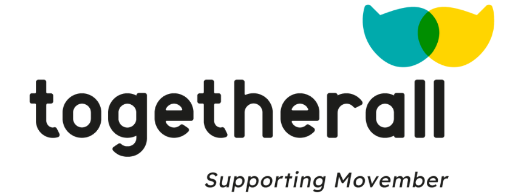
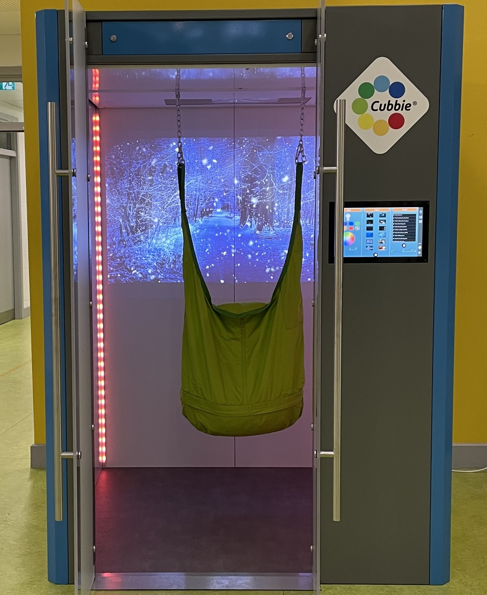

College life can be challenging, but you're not alone—mental health support is here to help you thrive.
ATU offers many services for students struggling with their mental health. Students can seek counselling, get advice from the Student Union, connect with others on TogetherAll, and make use of the Sensory Cubby if any issues arise.
Counselling
ATU offers a proffessional counselling service for any students who may be having academic or personal struggles. This is a safe, non-judgemental space to discsuss any of your concerns. Talking it over with a trained professional can help students to see things more clearly, better understand their choices and develop more effective ways of coping. The service is available to all ATU registered students who reside in the Republic of Ireland. Counselling services are available on campus and remotely, online. All topics discussed are strictly confidential. The first 6 sessions are free, after that you must pay.
The Counselling service has a 3-4 week wait time for appointments. If you are at a high level of distress and are at a risk to yourself or others schedule an urgent appointment.
Contact
Email: counselling.galwaymayo@atu.ie
Phone: +353 091 74 2228
Location: Room 162
For more information about the counselling service, click here.
Student Union
The Student Union is always open for students to come discuss their problems. The Student Union Website has information about wellbeing, bullying, sexual health, abuse, rape, etc. and how to seek help. Anu Akinsola is the VP for Welfare and can be contacted to discuss any problem you might be having.
Contact
VP's email: suwelfare.galwaymayo@atu.ie
VP's Phone: +353 089 9677436
Location: Office in the SU beside Student Health office.
Togetherall

Togetherall is an online community that is clinically moderated by mental health professionals and offers students a safe, anonymous place to express your thoughts, concerns, and triumphs. It is availible for free for all students. To join click here.
Sensory Cubby

The sensory cubby is located by the Sudent Services office. Here any student can come to destress and enjoy the sensory experience the cubby offers. You can enjoy a variety of calming visuals, lights and sounds inside the cubby and personalise the experience to your needs.
To learn more about the cubby and how it works, click here.